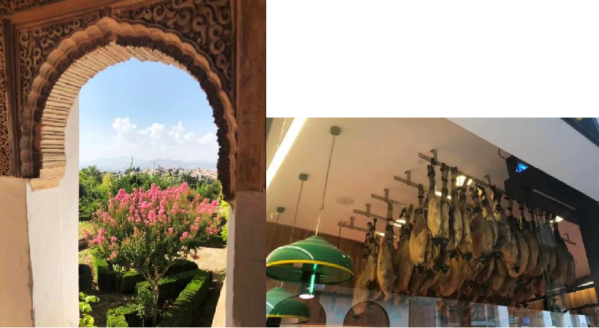
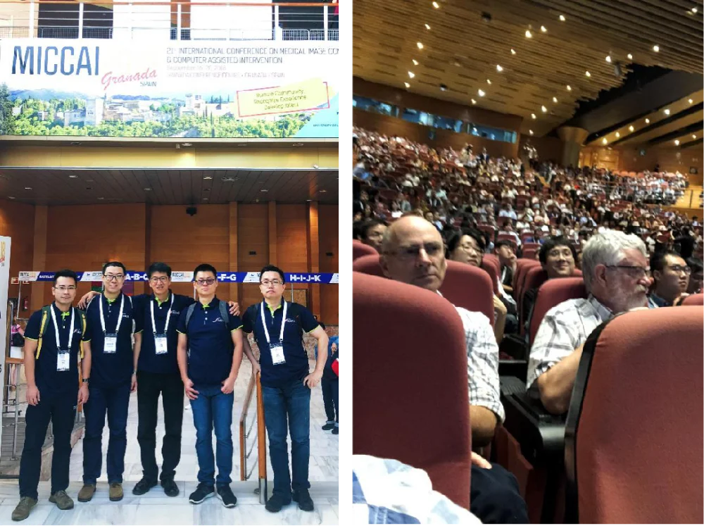
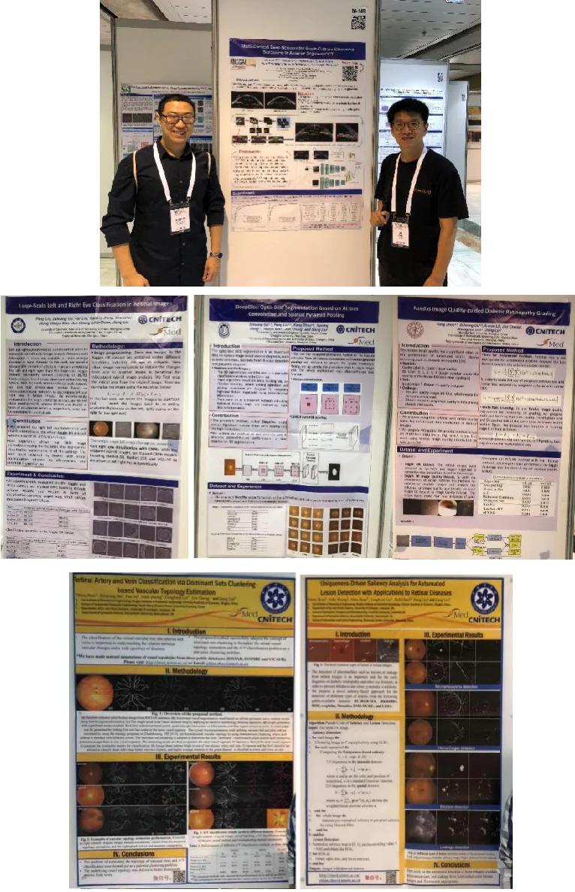
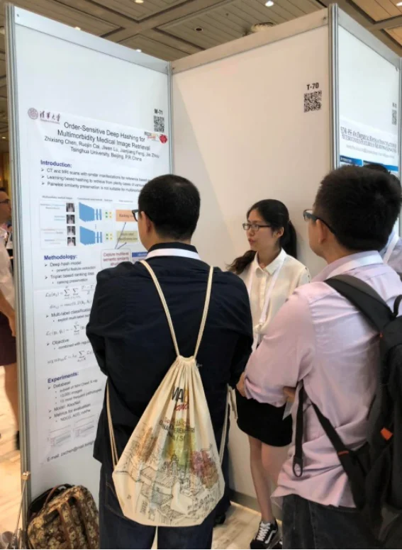

Hola~Espana!
国际医学图像领域的顶级学术盛宴 - 21st International Conference on Medical Image Computing and Computer Assisted Intervention （MICCAI-2018）于9月16-21号在西班牙格兰纳达举办。本届，iMED在共有6篇文章录用。承载着iMED的荣誉和6份海报，与9月15号踏上征途。
由于各种原因，珊珊替我们选择了一条虐待队友的路线：宁波-北京-伊斯坦布尔-马拉加-格兰纳达-马拉加-伊斯坦布尔-北京-宁波。而现实，完全可以引用席慕容的诗（小改）：
所有的结局珊珊都已替我们写好
所有的泪水也都已启程
却忽然忘了是怎么样的一个开始
在那个2018不再回来的夏末
无论我们如何地去倒时差
却不得不承认
青春是一本太仓促的书
我们累翻了
到达西班牙马拉加机场后，我们遇到了同样参加MICCAI会议的iMED老朋友，英国利物浦大学的郑亚林教授。
9月中的西班牙，早晚稍凉快，但是依然挡不住当地人的热情与奔放（要不是新闻，作者能写得更奔放）。格兰纳达位于西班牙南部，与地中海毗邻，是摩尔人统治西班牙最后的堡垒，也是哥伦布被任命去探索新大陆的地方。这座城市融汇着穆斯林、犹太教和基督教风格的建筑，使格拉纳达市成为西班牙一个文化和旅游热点。多元文化的冲突也给这座城市带来别样的风味。大家都很享受这种所谓的‘伊斯兰式的地中海风格’：
别墅靠海，花正开，漫步石子巷，火腿红酒满飘香。
仿佛告别了这个人工智能泛滥时代的浮躁，回归自然与历史，向那些用纸笔记录的年代致敬。

美景与美食你选哪个？小学生才做选择题，我们当然是全要啊！
格兰纳达（Granada）在西班牙语中是石榴的意思，大家都亲切称之为石榴城。说到石榴，作者有一个深深不留忘怀的梗，大概就是数年前，有人考验作者的英文水平，问‘石榴’的英文怎么说，作者脱口而出：sixteen （16）。幸亏，西班牙人会说英语的不多，作者不需要展示自己拙劣的英语 - 他们跟作者一样，都有一双灵巧的双手与会说话的眼睛。因此，坐车，问路，点菜或者搭讪，交流问题都不是太大。
言归正传，本次MICCAI相比前两年，投稿、接收文章、与会人数、workshop数量、turotial数量、赞助商个数等方方面面都创新高，今年参会注册人数超过了1300人。主要是因为受益于大环境，人工智能在这两年经历了疯狂生长。iMED团队的6篇论文主要针对糖网疾病的自动诊断，视网膜血管动静脉自动分类以及青光眼自动筛查等研究内容。

左图：iMED男团 赵一天，付华柱，刘江，许言午，程骏
右图：大会现场
这次大会的Keynote speech邀请到了Geraldine McGinty，Paolo Dario，Kristen Grauman，Bradley Nelson等大咖，不过大家普遍对Kristen Grauman更感兴趣（搜下照片就知道为啥啦）。他们分别对前沿radiology，BioRobotics，visual learning的研究内容做了精彩介绍。

本次iMED的6张MICCAI海报。上图左：付华柱，右：刘江

iMED双雄与清华美女学者探讨学术问题？
总结一下，深度学习已经占据了MICCAI的大壁江山，然而真正突出的文章并不多。不过，这两年内你也避免不了深度学习rampage的气势。最后，我们期待诗和远方，也需要眼前的苟且。
作者：赵一天